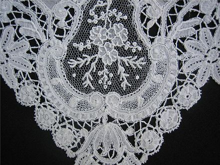

Бельгия — высокоразвитое постиндустриальное государство. Основа экономики — сфера услуг (прежде всего транспорт и торговля) и промышленность.
Преимущества: один из наиболее значимых производителей металлопродукции и текстиля. Фландрия является ведущим регионом в индустрии хай-тека, Антверпен — мировой центр торговли алмазами. Высокоразвитая химическая промышленность. Хорошо образованная и высокомотивированная многоязычная рабочая сила с высокой производительностью труда. Привлекательное место для американских ТНК. Хорошая водная транспортная сеть через Северное море, доступ к Рейну от Антверпена до Гента.
Слабые стороны: государственный долг порядка 87,7 % от ВНП намного превышает предельно допустимый в Еврозоне уровень 60 % (данные 2006 года). В некоторых регионах большое число хронических и неквалифицированных безработных. Частый выход работников на досрочную пенсию, из-за чего высокий уровень государственных пенсионных платежей. Больше бюрократии, чем в среднем по ЕС.
Бельгия входит в Организацию экономического сотрудничества и развития (ОЭСР) (Organization for Economic Co-operation and Development — OECD), в Европейский союз (ЕС), страна стала первым членом Европейского валютного союза в 1999 г.
Производство стали, цемента и химических продуктов в основном сконцентрировано в долине рек Самбра и Маас. Крупнейшие промышленные города — Монс, Шарлеруа, Намюр и Льеж. Ранее в этом районе также велась добыча угля, но в 1980-х гг. последние шахты были закрыты. Центр стальной промышленности — Льеж. Продукция химической промышленности — удобрения, красители, фармацевтические вещества, а также различные пластмассы. Центр нефтехимической промышленности расположен в Антверпене, в Брюсселе располагается штаб-квартира крупной химической и фармацевтической компании Solvay.
Текстильная промышленность, зародившаяся ещё в Средние века, включает переработку хлопка, льна, шерсти, синтетических тканей. Одни из важнейших видов продукции текстильной промышленности — ковры и одеяла. Главные центры текстильной промышленности — Гент, Кортрейк, Турне, Вервье. Брюссель, Брюгге и Мехелен известны как старинные центры производства кружев.
Другие отрасли промышленности — обработка алмазов (прежде всего в Антверпене), производство цемента и стекла, деревообработка, пищевая промышленность. Имеется несколько автомобильных производств.
В 1970 — 80 гг. экономический центр страны переместился из Валлонии во Фландрию. Это связано с упадком традиционных отраслей экономики Валлонии — добычи угля и чёрной металлургии. В настоящее время добыча угля прекращена совсем, металлургия же остаётся важной отраслью экономики, хотя её значение сильно уменьшилось. Сейчас экономика Фландрии получает больше инвестиций. Во Фландрии большое внимание уделяется прикладным научным исследованиям. Уровень безработицы в Валлонии в два раза выше, чем во Фландрии.
Основная отрасль энергетики — атомная. В Бельгии имеется две АЭС, одна неподалёку от Антверпена, другая — в районе Юи. В настоящее время 75 % электроэнергии в стране производится на АЭС.
Бельгия располагает развитой транспортной системой. Антверпенский порт — второй по величине порт в Европе. Также хорошо развит внутренний транспорт.
Продукция сельского хозяйства составляет только 1,4 % ВВП (по данным на 2006 г.), однако такой низкий показатель говорит не о слабом развитии сельского хозяйства, а о сильном развитии остальных отраслей экономики. Важнейшие растения — пшеница, овёс, рожь, ячмень, сахарная свёкла, картофель и лён. Животноводство — в основном разведение крупного рогатого скота и свиней. С сельским хозяйством тесно связаны такие традиционные отрасли пищевой промышленности, как пивоварение и производство сыра.